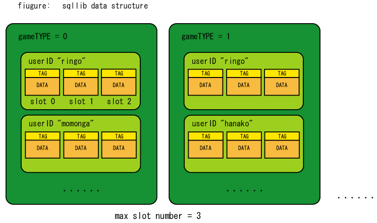

sqllib is a library for easy save/load through MySQL. Even a C programmer who don't know SQL, can drive and customise MySQL access, by an easy wrapper API of sqllib. Now that sqllib is assuming use of MySQL. If you want
Because all mm-suite's servers are using sqllib for DBMS access, you can switch all of them to another DBMS only by modifying sqllib.
In sqllib, these four information are important:
sqllib saves and loads user data according to these four information. Please look at the figure:
In this figure, from bigger to smaller, data containers are three types: "gameTYPE", "userID" and "slot". gametype will be used for saving more than one game title's data. By using "gameTYPE", sqllib can handle more than one game.
Next, for each game users, multiple(max slot number per user) data slot is prepared. You can save a set of data in each slot. For example, in ordinary Role Playing Game, a character data will be saved in a data slot, and a game user has some characters at the same time.
You can handle a set of data saved in each slot like a file. Also, "tag" information is included in each slot. You can also get "tag" strings in a listed form. You may use this function to display a list of characters of the user when the user want to choose what character to play when starting game play.
By configuring sqllib, it can save user data into UNIX file system directly, not into MySQL datafile. In this case, content of user data is saved in UNIX file, and INDEX/tag strings and pathname of UNIX file are saved in MySQL.
By using this function, there are some good points:
You will configure sqllib to use UNIX files to save data when calling sql_storage_create_context function. Basically, sqllib tries to save a set of data in each UNIX files, but because Linux filesystem has a terrible performance problem. So sqllib firstly creates a lot of(100-1000) subdirectories in a top data directory, and saves each files in each directory evenly distributed by a hash function.
There is not only good points, but a weakness. The biggest weakness is that you cannot access to the content of each set of data. In other words, you can not use SQL's "like" or "where" to find a data. In our experience, in most games, this weakness won't be fatal, so you can use this function.
As a conclusion, in almost all cases, you should use this function when using sqllib.
sqlcontext_t * sql_storage_create_context( char *host, char *user,
char *pass, char *database, char *table,
char *datafile_topdir, int divdirnum );
Initialize sqlcontext_t. This function tests MySQL accessibility when initializing. If the test failed, or failed to initialize any information, returns NULL pointer.
To configure sqllib to use UNIX data file not MySQL, you have to make datafile_topdir argument have proper directory, for example, "/var/foodir". If no subdirectories are not resistant in the top directory, sqllib will make all required subdirectories in it. sqllib makes dirdivnum of subdirectories. You specify this argument usualy 100 or 1000. 10000 should be too much.
void sql_storage_cleanup_context( sqlcontext_t *s );
Release a sqlcontext_t which is previously created by sql_storage_create_context function.
int sql_storage_save( sqlcontext_t *s, char *uid,
int type, int slotid, int version, char *tag, int taglen,
char *data, int datalen );
save a combination of "version,tag,data" by specifying slot by slotid argument. data is binary data, and you can include "\0" in it.
int sql_storage_insert( sqlcontext_t *s,
char *uid, int gametype, int slotid, int dataversion,
char *tag, int taglen,
char *data, int datalen );
Insert data into database.
It does not check the entry exists or not.
This function won't be used for saving character data,
but used for Mail service or BBS.
int sql_storage_load( sqlcontext_t *s, char *uid,
int gametype,
int slotid, int *dataversion, char *tag, int *taglen,
char *data, int *datalen );
Load data from database. tag information is also loaded
at the same time.
int sql_storage_load_by_tag( sqlcontext_t *s,
char *uid,
int gametype,
int *dataversion,
char *tag, int taglen,
char *data, int *datalen );
Load data from database, without specifying slotid.
You specify tag to find the required data.
int sql_storage_tag_exists( sqlcontext_t *s, char *tag, int taglen );
Check if a set of data exists or not.
Search data by specified tag.
You can use this function when you want to find
character data by character name, not slotid.
int sql_storage_delete( sqlcontext_t *s,
char *uid, int gametype, int slotid );
Delete a set of data from a data slot.
As an example, this function is used by mm-suite default DBSV
when the user is deleting a character.
int sql_storage_delete_by_tag( sqlcontext_t *s,
char *uid, int version, char *tag, int taglen );
Delete a set of data from data slot, by specifying
tag information by tag argument.
As an example, mm-suite's default MSGSV uses this function
to delete a message from user's mail box.
int sql_storage_get_blank_slot( sqlcontext_t *s, char *uid, int gametype,
int maxslot, int *blankslotid );
Find a blank data slot in a user's slots, by userID.
As an example, mm-suite's default DBSV is using this function
to find a blank character slot when creating a new character.
int sql_storage_get_tag_list( sqlcontext_t *s, char *uid, int gametype,
char **tags, int *slots, int *versions, int *num );
Get all tag information within a user slots in listed form.
For example, mm-suite's default DBSV is using this function
to show a user the character list.
int sql_storage_load_multiple_by_uid( sqlcontext_t *s,
char *uid, int gametype,
int dataversion,
int ofs, int *num,
char **tag, int *taglen,
char **data, int *datalen )
Get limited number(num) of newest data entries
from a user's slots.
This function is specially designed for implementing
web like BBS system. Of course, mm-suite's default MSGSV
is using this function to maintain BBS system.
int sql_storage_count_uid( sqlcontext_t *s, int gametype, int slotid,
int version, int *count );
Count how many data is saved in the "game, version, slotid",
without specifying userID.
This function is used by mm-suite's default MSGSV
to re-build user's contact list. MSGSV uses both this and
get_all_uid function below.
int sql_storage_get_all_uid( sqlcontext_t *s, int gametype, int slotid,
int version,
char **uid, int uid_max, int uid_max_each );
Get all user IDs from database specifying "gameTYPE,version,slotid".
This function is also used by MSGSV, to re-build user's
contactlist. To know how many number of users are existent,
MSGSV calles sql_storage_count_uid first, and after allocating
working memory for it, calls sql_storage_get_all_uid.
int sql_storage_count_entries( sqlcontext_t *s, int *count );
Count how many entries are in a whole database.
This can be used to make a statistics, and debugging.
int sql_storage_count_entries_by_uid( sqlcontext_t *s,
char *uid, int *count );
Count how many characters are owned by a user.
int sql_storage_load_by_order_id( sqlcontext_t *s, int ord,
char *uid, int *uidlen,
int *gametype,
int *slotid, int *dataversion,
char *tag, int *taglen,
char *data, int *datalen );
Load many sets of data sorted by insertion order.
This function is usually used with sql_storage_get_order_id_range
function described below.
A sample code is included in sqllibtest.c.
int sql_storage_get_order_id_range( sqlcontext_t *s,
int *min, int *max );
Get max number and minimum number of "ord" field.
int sql_storage_discard_old_entries( sqlcontext_t *s, int remain_num );
Delete oldest entries based on "ord" field information.
This function leaves remain_num entries remaining.
You can make a BBS-like system, in which only top N entries are
always remaining.
Usually, you will call sql_storage_discard_old_entries
function after saving(inserting) new entry.
int sql_storage_delete_all_entries( sqlcontext_t *s );
Delete all entries in a table (danger!).
This problem is related all DBMS, and we have to solve this if we want to use DBMS in our applications. "Medium blob fragment problem" occurs when we are using variable length data record in MySQL table. In fact, when we expand variable length data record with some sequence, the data is widely distributed in data file, and extra disk access is required to get the whole data record. Let's explain this mechanizm in pictures:
[AAAAAAA]
[AAAAAAA][BBBB]
Now let's expand first data after saving second data. Then, simply thought, it will be:
[AAAAAAA][aaaa][BBBB]
But, to achieve this, we have to shift all data saved in this file, and current file system doesn't have this function. So, MySQL saves extended data in the last part of the data file:
[AAAAAAA][BBBB][aaaa]
As you know, to get the first data record, it has to access the first part of the file and the last part of file. So finally two disk random access are required. This simply leads performance problem.
Let's repeat processes shown above. Then, content of data file is like that:
[AAAAAAA][BBBB][aaaa][bbbbb][CCCCCC][aaaaa][bbb][aa][bbbb][ccccc][aaa]
This is called "data fragment problem".
To solve this problem, there are two ways available:
But, we don't recommend using "optimize table" command because "optimize table" needs a lot time (from minutes to hours), and also because it will get fragmented soon after doing optimization after all. So, sqllib has a function that it saves variable data in UNIX file, and save only pathname of UNIX file in MySQL table.
Some people say UNIX files are also get fragmented, but fragment unit of UNIX files are far larger than MySQL's, so in most cases we can avoid fragment problem by using UNIX files.